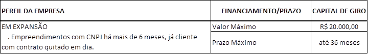

Microcredito Fidelidade (PJ)
Created Friday 29 April 2016PÚBLICO ALVO — PESSOA JURIDICA
- Empreendimentos com mais de 06 (seis) meses de faturamento e,
- JÁ CLIENTES DA FOMENTO PARANÁ e,
- Que tenham contratos quitados em dia e,
- Que faturem no máximo R$ 360 mil/ano ou R$ 30 mil/mês
** Se o cliente não se encaixar em TODAS as situações acima, ele não é público alvo para este produto **
- JÁ CLIENTES DA FOMENTO PARANÁ e,
- Que tenham contratos quitados em dia e,
- Que faturem no máximo R$ 360 mil/ano ou R$ 30 mil/mês
** Se o cliente não se encaixar em TODAS as situações acima, ele não é público alvo para este produto **
O que pode ser financiado?
- Capital de giro puro
*Não precisa comprovação de gastos
Valores e Prazo de Financiamento:
Taxas
Taxa mínima: 1,77% ao mês**
Taxa máxima: 1,98% ao mês**
Taxa máxima: 1,98% ao mês**
** conforme análise de crédito **
** esta linha NÃO TEM SUBSÍDIO de taxa **
** esta linha NÃO TEM SUBSÍDIO de taxa **
Porque no simulador do site não tem esta linha?
No simulador usamos as condições para quem ainda não é cliente.
Tarifa de Abertura de Cadastro
As operações de microcrédito são tarifadas! Consulte regras aqui
Conta corrente e CNPJ
Em Microcrédito para PJ é obrigatório que a CONTA CORRENTE seja em nome da PESSOA JURÍDICA
O crédito do valor financiado somente pode ser feito em conta corrente de TITULARIDADE da empresa financiada. Não pode ser em conta de outra pessoa/empresa.
A partir do momento de abertura do CNPJ o microcrédito somente pode ser feito na modadelidade Pessoa Jurídica (PJ
Lista de Documentos
- MEI: ./Lista de Documentos PJ - MEI.pdf
- PJ: ./Lista de Documentos PJ.pdf
->Informações detalhadas sobre garantias, clique aqui.
Solicitação de financiamento
As operações de microcrédito somente podem ser realizadas com AGENTES DE CRÉDITO (lista disponível no site da Fomento - clique aqui).
Em Curitiba, além do Agente de Crédito o pedido pode ser feito na Fomento Paraná.
O cliente pode procurar o Agente de Crédito de sua preferência mas se estiver em outro município ficará a critério do próprio Agente atender o cliente ou não.
Consultas Públicas no pré-atendimento
Antes de incluir a proposta no sistema, realize as consultas públicas dos envolvidos na proposta (CPF e CNPJ)
Use o guia de consultas públicas disponível no FomentoNet (clique aqui)
Backlinks: 5. Linhas de Financiamento